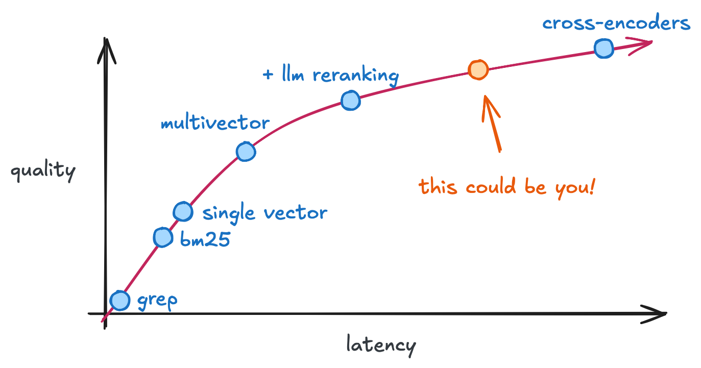
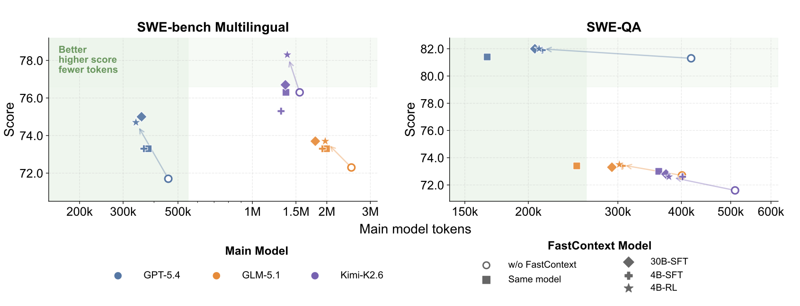

Paper Notes: FastContext
last updated 2026-06-16
An Era of Hybrid Agents?
The FastContext paper made a small splash recently, probably in part because it came out immediately after Satya’s “a frontier without an ecosystem is not stable.” It’s (mostly) a 4B model that makes parallel tool calls to extract context from a codebase.
The core premise is that a large model can spin out a task-specific subagent to build context for specific questions. From their analysis, ~50% of all the tokens consumed by an agent on the multilingual SWE tasks are to search/navigate the codebase. The promise of this subagent approach is to push those tokens spent searching to a smaller model. Thus reducing the price of those 50% of tokens by up to 95%.
I think it’s a technique that exists as the orange region in the IR Pareto frontier from my earlier post “Searching, Fast and Slow“

Paper Notes
FastContext is a set of Qwen finetunes that are used as sub-agents for repository exploration/retrieval tasks. They feed filenames and line ranges back to the orchestrator agent.

Their models really seem to improve token efficiency of the orchestrator model, with minor potential improvements (and importantly not degradations).Inputs and Outputs
Input
Find the code paths for Goldmark markdown image rendering / embedded image render hook, especially where standalone image block…
Then, the FastContext model issues parallel tool calls over several search turns to find the relevant data. The model can call read, grep, and glob to navigate and open files/snippets.
FastContext Output
<final_answer>
/goldmark/images/transform.go:17-22 (Image transformation)
/goldmark/images/transform.go:40-68
</final_answer>
The parentheticals are optional notes provided from the base model to the orchestrator. These get converted back to full code snippets when passed back to the orchestrator model.
Training Data and Setup
The released models are 4B and 30B, trained with an SFT then RL approach, on a surprisingly small amount of data! ~3k SFT trajectories and ~400 questions used for RL. The traces are all sourced from Claude 4.6 Sonnet.
They source 3 classes of data:
parallel_toolcalls- call non-redundant toolsmultiturn_trajectories- multiturn with system/user messageslinerange- get precise citations
Interestingly, they do RL directly using retrieval \(F_1\) as a reward! So they aren’t propagating any signal back from a SWE-bench-style task with an orchestrator agent. Just treating each “context search” as an independent step that has to surface the correct lines/functions/files. There is some part of me that feels like performance might be left on the table as a result?
The overall reward function is:
Where \(P_f\) are the predicted files, \(P_l\) are the predicted lines, \(G_f\) are the ground truth files, and \(G_l\) are the ground truth lines. \(F_1\) is ~standard. They have a format penalty for, e.g. missing the <final_answer> block or line formatting, and a small bump for doing parallel tool calls.